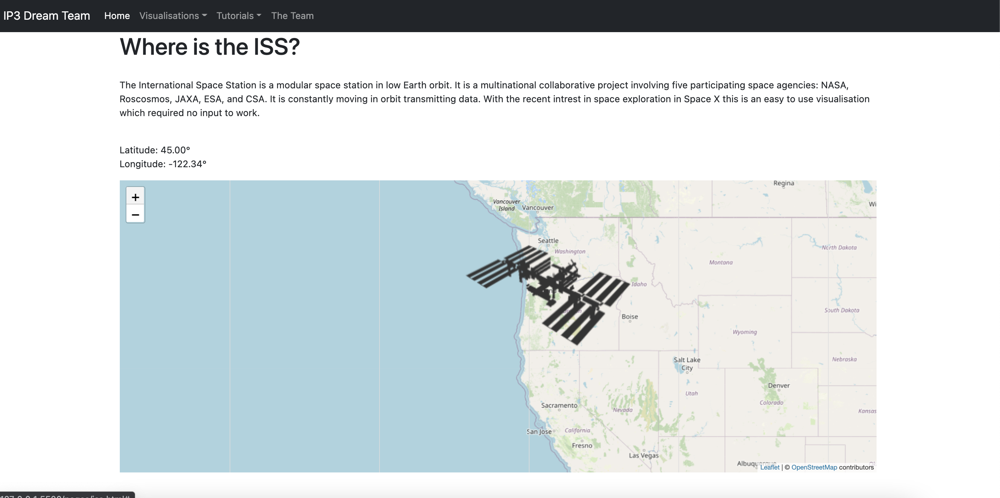

Where is the ISS? Tutorial
Why Visualise International Space Station?
Everyone is interested with the concept of space and with the recent news of Elon Musk and his space adventures. Also this is allows for the visualisation to be shown via a map which is different to everyone elses.
On this page, there will be a tutorial on how to utilise the Where is the iss? API. This API provided the data location of the ISS in Longitude and Latitude figures. This tutorial will focus specifically on the exact positioning of the ISS and displaying it on the map along with the co-ords with it. It will contain how to code the API and how to use it the way that I have decided to implement it.
The Data Sources Used
For visualising the data for the position of the ISS. I used "Where the ISS at?" which is a Rest API which can supply current, past, or future position of the ISS.

Link to the Where is the ISS? API used
Making JavaScript Files Run
To make the file run when the HTML page runs, you need to include the scripts at the bottom of the page. The following code is how you should do this. This includes the scripts to the AJAX libraries and the scripts to both of the JS pages used to pull the data.
<script src="../js/ewan/iss.js">
Getting Location Data
To start with an create an async function which will, allow to use the await keyword from the start.This function will be called getISS. I also created a global variable called api_url which will then just allow me to input that variable name when calling the API in the fetch function
async function getISS() {
const response = await fetch(api_url);
}
const api_url = 'https://api.wheretheiss.at/v1/satellites/25544';
2. Converting the stream of data into desired response
When the data comes back from the fetch function it needs to be converted into the way you want. We want the response to come back as json. From the Json response we want only the Longitude and Latitude data. Since the data response is being converted into json it allows to easily get them with the JavaScript Object. The being able to JavaScript destructioning it allows to take the data from the object and puts them into their own variables. Doing this it makes it easy to display the location data onto the page.
const data = await response.json();
const { latitude, longitude } = data;
document.getElementById('lat').textContent = latitude.toFixed(2);
document.getElementById('lon').textContent = longitude.toFixed(2);
Using the .toFixed allows to display the figures to a certain decimal point preventing horrible long numbers being displayed
3. Accessing Leaflet.JS
To prepare for using Leaflet.JS some small preparation steps need to be done. You firstly need to include the Leaflet CSS file in the head of the html file.
<link
rel="stylesheet"
href="https://unpkg.com/leaflet@1.7.1/dist/leaflet.css"
integrity="sha512-xodZBNTC5n17Xt2atTPuE1HxjVMSvLVW9ocqUKLsCC5CXdbqCmblAshOMAS6/keqq/sMZMZ19scR4PsZChSR7A=="
crossorigin=""
/>
The next preparation step is to include the Leaflet JavaScript file after the CSS one
<script
src="https://unpkg.com/leaflet@1.7.1/dist/leaflet.js"
integrity="sha512-XQoYMqMTK8LvdxXYG3nZ448hOEQiglfqkJs1NOQV44cWnUrBc8PkAOcXy20w0vlaXaVUearIOBhiXZ5V3ynxwA=="
crossorigin=""
/script>
The last preparation step that needs to be made is to create a div for where the map will be placed on the page along with this it needs to have a defined hight for it to display.
<div id="issMap"></div>
<style>
#issMap {
height: 500px;
}
</style>
4. Creating Map Object
We need to create the map object for it to display now that we have done all the prep on the script side. The variables within the .setView are for Longitude & Latitude for the position of the map when it first loads and the last one is for the zoom level of the map.
const mymap = L.map('issMap').setView([0, 0], 1);
const attribution = © <a href="https://www.openstreetmap.org/copyright">OpenStreetMap contributors';
At this stage the map area will be visible but it wont show anything that is because the map tile hasn't been specified. A tile for the map is the image in which the map is made up of. So to get the tiles we will be using OpenStreetMap which is an open repository. The only thing that is required to use Open Street map is that it requires you to include an attribution
const tileUrl = 'https://{s}.tile.openstreetmap.org/{z}/{x}/{y}.png';
const tiles = L.tileLayer(tileUrl, { attribution });
tiles.addTo(mymap);
Using the Where is the ISS Page
1. Open up the page by clicking on a link
Either Navigate to the page using the Nav-Bar or click on this link to access the Where is the ISS Page.
2. See the data that is displayed!
The page then should automatically update with map, 